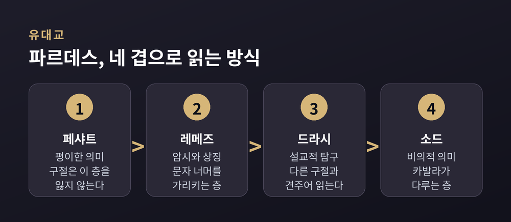
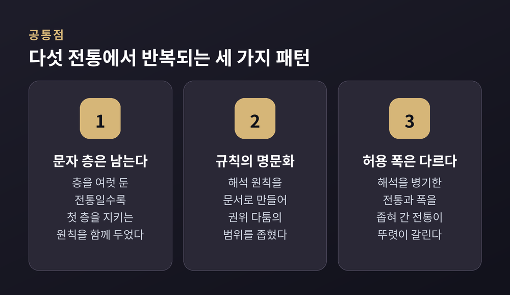

이번 글에서는 경전 해석의 전통을 비교해 정리해 보겠습니다. 유대교의 미드라시, 기독교의 사중의미, 이슬람의 타프시르, 불교의 요의·불요의, 힌두교의 미맘사를 나란히 놓고 봅니다. 어느 해석이 옳은지를 가리는 글이 아니라, 각 전통이 어떤 문제 앞에서 어떤 규칙을 만들었는지를 살피는 글입니다.
세 줄 요약
경전을 가진 공동체는 비슷한 곤란을 겪습니다.
첫째, 문자 그대로 읽으면 걸리는 대목이 나옵니다. 서로 어긋나 보이는 구절, 시대가 지나 낯설어진 규정, 신을 사람처럼 묘사한 표현이 그렇습니다.
둘째, 정경화입니다. 본문이 확정되고 나면 더 이상 새 문장을 보탤 수 없습니다. 달라진 상황에 대한 답은 오직 해석으로만 조달해야 합니다.
셋째, 권위 문제입니다. 누구의 읽기가 유효한지 정해야 합니다. 개인인지, 학파인지, 전승의 사슬인지, 공의회인지.
넷째, 언어입니다. 경전의 언어와 독자의 언어는 세월이 흐를수록 벌어집니다. 문법과 사전이 신앙의 문제와 맞물리는 지점이 여기입니다.
해석학은 이 네 가지 압력에 대한 응답입니다. 전통마다 답이 달랐을 뿐입니다.
미드라시는 히브리어 어근 '다라시(찾다, 탐구하다)'에서 나온 말입니다. 성서 각 권의 배열을 따라가며 붙인 랍비 해석의 모음을 가리킵니다. 주제별로 자료를 묶은 미슈나와는 편집 방식이 다릅니다.
미드라시는 두 갈래로 나뉩니다. 법 규범을 본문에서 끌어내는 할라카 미드라시, 그리고 서사·설교·윤리를 다루는 아가다입니다.
탄나임 시대의 할라카 미드라시는 다섯 종이 남아 있습니다. 출애굽기를 다룬 메킬타와 메킬타 데랍비 시몬 벤 요하이, 레위기의 시프라, 민수기와 신명기의 시프레, 민수기의 시프레 주타입니다. '메킬타'는 척도나 규범을, '시프라·시프레'는 기록이나 책을 뜻합니다. 대다수 학자는 이 가운데 둘이 이슈마엘 학파에서, 나머지가 아키바 학파에서 나왔다고 봅니다.
시기가 더 내려온 미드라시 랍바도 있습니다. 가장 오래된 창세기 랍바는 5세기 것으로 절별 주석에 가깝고, 6세기의 레위기 랍바는 설교체 자료로 짜여 있습니다.
이 전통의 특징은 규칙을 문서로 명시했다는 점입니다. 미도트라 부르는 해석 원칙이 그것입니다. 알려진 최초의 목록은 기원전 1세기 힐렐의 일곱 규칙이고, 100년경 랍비 이슈마엘 벤 엘리샤의 열세 규칙, 150년경 랍비 엘리에제르 벤 요세 하글릴리의 서른두 규칙이 이어집니다. 이슈마엘의 열세 규칙은 엄밀히 말하면 힐렐의 일곱 규칙을 확장한 것입니다.
대표적인 두 가지만 들어보겠습니다.
이 미도트는 이후 천 년 이상 유대교 안에서 규범으로 기능했습니다.
네 겹 읽기를 가리키는 '파르데스(PaRDeS)'라는 말도 널리 알려져 있습니다. 페샤트(평이한 의미), 레메즈(암시·상징), 드라시(설교적 탐구), 소드(비의적 의미)의 머리글자를 딴 것으로, 히브리어로 '과수원'을 뜻합니다. 다만 시기를 정확히 볼 필요가 있습니다. 각 층위의 내용은 오래된 랍비 전통에 뿌리를 두지만, 약어로 정리된 것은 13세기 말입니다. 중세 기독교의 네 겹 도식과 어느 쪽이 어느 쪽에 영향을 주었는지는 학자마다 견해가 갈립니다. 이 글에서는 단정하지 않겠습니다.
흥미로운 점은 층이 늘어난 뒤에도 문자적 층이 죽지 않았다는 것입니다. "구절은 결코 평이한 의미를 잃지 않는다"는 원칙이 함께 따라다닙니다. 중세 프랑스의 라시(1040~1105)는 자기 주석의 목표를 각 구절의 페샤트를 밝히는 데 두었고, 때로는 전승된 랍비 해석을 제쳐두면서까지 평이한 의미를 택했습니다. 스페인의 아브라함 이븐 에즈라는 더 강하게, 페샤트가 드라시 때문에 흔들려서는 안 된다고 했습니다.

초기 기독교 주석에는 결이 다른 두 학파가 있었습니다.
알렉산드리아 학파는 알레고리적 해석을 강조했습니다. 오리게네스(약 185~254)는 신적 계시의 가장 의미 있는 층은 알레고리화를 거쳐야 드러난다고 보았습니다. 다만 그가 문자적 의미를 완전히 버린 것은 아닙니다.
안디옥 학파는 반대편에 섰습니다. 몹수에스티아의 테오도루스(약 350~428)는 주석에서 비평적·문헌학적·역사적 방법을 썼고, 알렉산드리아식 알레고리를 거부했습니다. 알레고리와 역사에 관한 논고를 따로 써서 오리게네스가 문자적 의미를 소홀히 한다고 비판하기도 했습니다.
층위 도식이 정리된 것은 그다음입니다. 오리게네스에게는 세 겹(문자·도덕·알레고리)이 있었고, 요한 카시아누스(약 360~435)가 여기에 종말론적 의미를 더해 네 겹을 처음 정식화했습니다. 아우구스티누스(약 354~430)도 비슷한 형태를 썼고, 그의 『기독교 교양』은 중세 해석학의 기본 교본이 됩니다.
네 겹은 이렇게 갈립니다.
| 층위 | 묻는 질문 |
|---|---|
| 문자적·역사적 의미 | 무슨 일이 있었는가 |
| 알레고리적 의미 | 무엇을 믿을 것인가 |
| 도덕적 의미 | 어떻게 살 것인가 |
| 종말론적 의미 | 무엇을 바랄 것인가 |
중세 학생들은 이 넷을 라틴어 두 줄짜리 운문으로 외웠습니다. 다키아의 아우구스티누스(1282년 몰)의 것으로 전해지고, 니콜라우스 데 리라(1340년 몰)가 인용하면서 널리 퍼졌습니다. 그런데 정작 니콜라우스 본인은 네 층 가운데 문자적 의미를 으뜸으로 놓았습니다.
근대에 오면 무게중심이 다시 옮겨갑니다. 역사비평적 접근의 첫 본격 진술은 스피노자의 『신학정치론』으로 평가됩니다. 스피노자는 성서를 다른 책과 똑같이 다루어야 한다고 했습니다. 문헌학과 역사의 규칙에 따라 읽고, 구절이 놓인 문맥과 그 책이 쓰인 정황을 함께 살피라는 것입니다. 이 흐름은 가블러와 슐라이어마허를 거쳐 벨하우젠으로 이어집니다. 벨하우젠은 19세기 마지막 사반세기에 히브리 성서 구성에 관한 문서가설을 내놓았습니다.
역사비평은 19세기 중반부터 한 세대 전까지 성서 학술 연구의 지배적 접근이었습니다. 지금은 문학비평·정경비평·수용사 같은 접근이 함께 놓여 있습니다.
타프시르는 아랍어로 '설명, 주해'를 뜻합니다. 꾸란 해설의 학문이자 주석서 자체를 가리킵니다. 백과사전의 서술에 따르면 타프시르는 꾸란의 본래 해석 권위였던 무함마드의 사후에 등장했고, 모호한 성구를 설명하고 교리적 입장을 정하기 위해 발달했습니다. 발생 계기가 앞서 말한 네 압력 가운데 첫째와 셋째에 정확히 걸려 있는 셈입니다.
방법론은 크게 두 갈래로 나뉩니다.
주요 주석가와 시기를 정리하면 이렇습니다. 꾸란 전체에 대한 현존 최초의 완결 주석은 8세기 무카틸 이븐 술라이만(767년경 몰)의 것으로 전해집니다. 앗타바리(923년 몰)의 주석은 7세기 말에서 8세기 초 선대 주석가들의 언명을 집대성한 기념비적 저작으로, 모든 타프시르의 기본서로 꼽힙니다. 앗자마흐샤리(1144년 몰)는 꾸란의 수사적 특징에 대한 관심으로, 파흐르 앗딘 앗라지(1210년 몰)는 신학적 깊이로 이름이 남았습니다. 근대 타프시르는 무함마드 압두(1905년 몰)의 강의를 라시드 리다(1935년 몰)가 정리한 『알마나르』 주석에서 출발한 것으로 봅니다.
전근대 이슬람 주석에는 눈여겨볼 특징이 셋 있습니다.
하나, 문헌학적 성격이 강합니다. 아랍어 문법·사전학·수사학이 중심에 있어, 9세기 이후 주석서는 뚜렷한 문헌학적 색채를 띱니다.
둘, 구절을 무함마드 생애의 사건과 연결하려는 경향이 있습니다.
셋, 여러 해석을 나란히 놓고 견주는 것이 일반적이었습니다. 한 구절에 그럴듯한 해석이 여럿 있을 수 있다는 점을 인정한 것입니다.
본문 자체를 다루는 학문도 발달했습니다. 학자들은 꾸란의 자음 골격에 모음과 자음 판별을 채워 넣는 일곱·열·열넷 가지 공인 낭송 방식을 비교 정리했습니다. 성립 시기에 대해서는 견해가 갈립니다. 전통은 통일된 자음 골격의 반포를 3대 칼리프 우스만(재위 644~656)의 공으로 돌리고, 초기 사본의 탄소연대측정 결과도 650년경에는 수용 본문이 있었다는 견해와 대체로 부합합니다. 반면 점진적 형성 모델을 선호해 본문 확정을 700년경으로 늦춰 보는 학자들도 있습니다.
정경이 닫힌 뒤 새 상황에 답하는 장치가 이즈티하드입니다. 꾸란·하디스·이즈마로 정확히 다루어지지 않은 문제에 대한 독립적 해석을 말합니다. 초기 공동체에서는 자격을 갖춘 법학자라면 누구나 라이(개인적 판단)와 키야스(유추)의 형태로 이 사고를 행할 권리를 가졌습니다. 그 이론적 토대가 우술 알피크흐이고, 여기서 꾸란·하디스·합의·유추라는 네 원천이 다루어집니다.
한 가지 덧붙이면, 이슬람 법이론 안에는 해석의 정오를 두고 두 입장이 오래 공존했습니다. 결정적 증거가 없을 때 적절히 도출된 견해는 모두 옳다는 쪽과, 옳은 입장은 언제나 하나뿐이고 해석은 그 하나를 향한 오류 가능한 시도라는 쪽입니다.
불교 문헌은 분량이 방대하고, 문자 그대로 읽으면 서로 어긋나 보이는 대목이 적지 않습니다. 이 전통이 택한 장치는 가르침에 위계를 두는 것이었습니다.
붓다의 가르침은 요의와 불요의로 나뉩니다. 요의(니타르타)는 문자 그대로 참인 가르침입니다. 불요의(네야르타)는 전적으로 참이어서가 아니라 특정한 목적을 위해 설해진 가르침입니다. '네야르타'라는 말 자체가 '끌어내어져야 할 의미'라는 뜻입니다.
이 구분 덕분에 상충해 보이는 경전들을 하나의 정합적 그림으로 묶을 수 있게 됩니다. 요의는 궁극의 참을 가리키고, 불요의는 그 궁극을 이해시키기 위한 잠정적 방편으로 자리를 잡습니다. 이미 초기 문헌 단계에서 의미가 분명한 경과 더 풀어야 할 경을 구별하고 있었습니다.
해석 지침도 정리되어 있습니다. '네 가지 의지처'라 불리는 원칙 가운데 하나가 불요의가 아니라 요의에 의지하라는 것입니다. 여기에 네 가지 의도적·비유적 언어, 네 가지 추론 방식이 함께 논의됩니다.
방편, 곧 우파야도 같은 맥락에 있습니다. 산스크리트와 팔리어로 '수단'을 뜻하는 이 말은 대승 경전에서 큰 비중을 갖습니다. 『법화경』에서는 붓다의 가르침 자체가 사람들을 이끌기 위한 잠정적 방편으로 제시됩니다. 여기에는 '참된' 상황을 그대로 나타내지는 않지만 듣는 이의 근기와 맥락에 맞는 잠정적 진리의 선포가 포함됩니다.
나가르주나는 『중론』에서 이 문제를 두 진리로 정리했습니다. 붓다가 설한 법은 세속의 관습적 진리와 궁극의 진리라는 두 축에 근거한다는 것입니다. 그는 이 구분을 이해하지 못하면 가르침 자체를 이해할 수 없다고 보았습니다.
주석 문헌도 두껍게 쌓였습니다. 5세기 스리랑카에서 활동한 붓다고사는 『청정도론』을 지어 팔리 삼장의 가르침을 아비담마 방식으로 체계화했습니다. 전통은 그에게 열네 편의 주석(아타카타)을 귀속시키지만, 현대 학계는 대체로 『청정도론』과 처음 네 니카야에 대한 주석만을 그의 저작으로 인정합니다. 전승과 학설이 갈리는 대목이니 그대로 적어둡니다.
힌두 전통은 텍스트 자체를 두 층으로 나누는 데서 출발합니다.
슈루티는 '들린 것'입니다. 신적 계시의 산물로 여겨지며, 네 베다와 브라흐마나, 아란야카, 우파니샤드가 여기 속합니다. 스므리티는 '기억된 것'입니다. 인간의 기억에 근거한 성전 문헌으로, 베다 사상을 부연하고 해석하고 성문화하되 파생적이므로 권위는 낮다고 봅니다. 칼파수트라, 푸라나, 『라마야나』와 『마하바라타』가 이쪽입니다. 다만 현대 힌두교도 다수에게 더 익숙한 쪽은 오히려 스므리티라는 서술도 함께 나옵니다.
해석 규칙을 전문적으로 다룬 학파가 미맘사입니다. 힌두 정통 여섯 학파 가운데 베다 주해에 특화된 학파로, 베다의 명령적 부분을 해석해 제의 수행과 다르마를 인도하는 데 초점을 둡니다. 이 학파의 근본 전제는 베다가 저자 없이 스스로 존재하는 계시이며 그 권위를 논박할 수 없다는 것입니다.
문헌 계보는 이렇습니다. 기원전 4세기경 자이미니의 『미맘사 수트라』가 체계의 출발점입니다. 여기에 샤바라스바민(기원전 1세기경으로 추정되나 확정되지 않았습니다)이 붙인 『샤바라 바샤』가 열두 장 전체에 대한 유일한 현존 주석입니다. 7~8세기의 쿠마릴라와 프라바카라가 이후 두 학파의 시조가 됩니다. 쿠마릴라는 미맘사를 다르마 탐구로 한정한 반면, 프라바카라는 베다 텍스트의 의미 탐구라는 더 넓은 과제를 부여했습니다.
핵심 도구는 문장의 성격을 나누는 것이었습니다.
서술문을 명령문과 같은 무게로 읽지 않겠다는 이 구분이, 문자 그대로 읽을 때 생기는 난점에 대한 이 전통의 답이었습니다. 그리고 이 원칙들은 학파 안에만 머물지 않았습니다. 스므리티 문헌의 저자들과 법전 요약서의 저자들이 실제로 이 도구를 가져다 썼습니다.
베단타 학파도 같은 뿌리에서 갈라져 나옵니다. 베단타는 '웃타라 미맘사', 곧 베다 후반부에 대한 성찰이라고도 불립니다. 샹카라의 『브라흐마 수트라 바샤』가 그 대표 주석입니다. 샹카라는 경험 세계의 논리적 분석이 아니라 절대자에서 출발하며, 우파니샤드를 올바로 해석하면 브라흐만의 본성을 가르친다고 논증했습니다.
정리해 보면 각 전통이 고른 답이 뚜렷하게 갈립니다.
| 물음 | 유대교 | 기독교 | 이슬람 | 불교 | 힌두교 |
|---|---|---|---|---|---|
| 어긋나 보일 때 | 미도트로 유비·추론 | 문자 위에 세 겹을 얹음 | 여러 해석을 병기 | 요의·불요의로 위계화 | 명령문과 설명문을 구분 |
| 권위의 소재 | 랍비 학파의 전승 | 교부·교회 전통, 근대엔 학문적 논증 | 전승 사슬과 학자 합의 | 경전 위계와 논서 전통 | 학파의 주석 계보 |
| 새 상황의 답 | 드라시·아가다 | 알레고리·도덕적 의미 | 이즈티하드·키야스 | 방편(우파야) | 미맘사 원칙의 확장 적용 |
| 언어 대응 | 히브리어 문법 연구 | 원어 문헌학 | 아랍어 문법·수사학 | 팔리어 주석 문헌 | 산스크리트 문장론 |
여기서 세 가지가 눈에 들어옵니다.
첫째, 문자적 의미는 어디서나 기준점으로 남습니다. 페샤트, 문자적 의미, 아랍어 문법 분석, 요의, 비디 — 이름은 달라도 어느 전통도 문자 층을 버리지 않았습니다. 층을 여럿 두는 전통일수록 오히려 첫 층을 지키는 원칙을 함께 두었다는 점이 인상적입니다.
둘째, 규칙의 명문화는 권위 다툼을 줄이려는 장치로 읽을 수 있습니다. 힐렐의 일곱 규칙, 우술 알피크흐의 네 원천, 미맘사의 해석 원칙, 불교의 네 가지 의지처가 그렇습니다. "아무나 아무렇게나 읽어도 되는 것은 아니다"를 제도로 만든 결과물입니다.
셋째, 허용되는 해석의 폭은 전통마다 다릅니다. 전근대 이슬람 주석은 대안적 해석을 나란히 병기하는 쪽이었고, 파르데스는 네 층을 모두 유효한 것으로 두었습니다. 반대로 문자 우위를 강조한 안디옥 학파나 근대 역사비평은 폭을 좁히는 방향으로 움직였습니다.

한계도 적어두겠습니다. 이 글의 정리는 교과서적 도식에 기대고 있습니다. 알렉산드리아와 안디옥의 대비만 해도 실제 텍스트에서는 그렇게 깔끔하게 갈리지 않습니다. 오리게네스조차 문자적 의미를 완전히 배제하지 않았으니까요. 각 전통 안에도 학파와 시대에 따른 편차가 큽니다.
정리하면 이렇습니다.
예전에는 해석의 차이를 전통 사이의 우열로 읽는 시선이 흔했습니다. 지금은 그보다, 각 전통이 어떤 압력 아래서 어떤 도구를 골랐는지를 보는 쪽이 더 많은 것을 설명해 줍니다.
같은 문제 앞에서 다른 도구를 골랐을 뿐입니다.
해석의 규칙은 신앙 이전에 읽기의 문제였습니다. 문자가 남고 상황이 변할 때, 사람들은 어떻게든 그 사이를 이어야 했습니다. 다섯 전통의 해석학은 그 이음매의 서로 다른 이름입니다.
낯선 전통의 주석을 굳이 들여다볼 필요가 있느냐고 물으신다면, 저는 있다고 답하겠습니다. 남의 읽기를 보고 나서야 내 읽기의 모양이 눈에 들어오기 때문입니다.